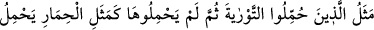
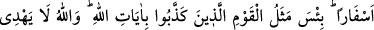
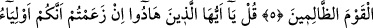
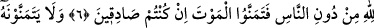
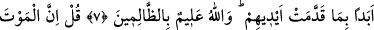
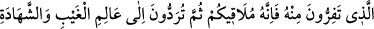
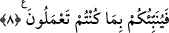

KİTAP TAŞIYAN
MERKEB GİBİ OLMAYIN
5. Tevrat’la yükümlü tutulup da onunla amel etmeyenlerin durumu, ciltlerce kitap
taşıyan merkebin durumu gibidir. Allah’ın âyetlerini yalanlamış olan kavmin durumu
ne kötüdür! Allah, zâlimler topluluğunu doğru yola iletmez.
6. De ki: Ey yahûdiler! Bütün insanlar değil de, yalnız, kendinizin Allah’ın
dostları olduğunuzu iddiâ ediyorsanız, bunda da samîmî iseniz, haydi ölümü temenni
edin (bakalım)!
7. Ama onlar, önceden yaptıklarından dolayı ölümü asla temenni etmezler. Allah,
zâlimleri çok iyi bilir.
8. De ki: Sizin kendisinden kaçtığınız ölüm, muhakkak sizi bulacaktır. Sonra da
görüleni ve görülmeyeni bilen Allah’a döndürüleceksiniz de O size bütün
yaptıklarınızı haber verecektir.
“Tevratla yükümlü tutulup da onunla amel etmeyenlerin durumu” Tevratı bilip de
onunla amel etmekle yükümlü tutulan yahûdiler ve sonra da onun âyetleriyle amel
etmeyenler, Rasûlullah’ın (a.s.) peygamberliğinden bahseden âyetleri yalnız okumakla
yetindiler. Bunların durumu, “Ciltlerce kitap taşıyan merkebin durumu gibidir.”
“Himar/eşek” kelimesi câhil yerine kullanılan bir hayvan ismidir. Çok câhiller için
araplar, “merkeplerden daha câhil” derler. Çünkü küfür cehâletten kaynaklanmaktadır.
İnkârcının merkebe benzetilmesi onu fazlasıyla küçümsemek, hakaret etmek, alay etmek
ve şaşkınlığı ile azarlamak içindir. Çünkü merkep “şaşkınlık”la anılır. Öküz de şaşkın
bir hayvan olarak tanınıyorsa da yük yükletmeğe uygun değildir.
Ey genç! İlim öğren, gerçekten câhil kalmak ayıptır,